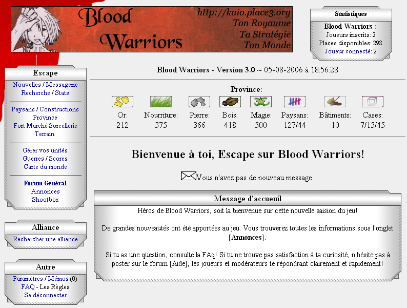

Blood Warriors, présentation générale
Bonjour, et bienvenue.
Vous êtes probablement tombé sur cette page car vous vouliez en savoir plus sur Blood Warriors. En premier lieu, il est nécessaire de savoir ce qui se cache derière ce nom barbare.
Blood Warriors est un jeu développé par Escape depuis le 27/02/2004. Ce jeu se joue exclusivement sur Internet, à travers un buttineur. Il n'y à pas d'interface graphique 3D, pas de programme à installer sur votre disque dur (à part le buttineur Firefox qui est conseillé). Tout ce dont vous avez besoin pour jouer à ce jeu est de créer un compte, une adresse e-mail, et une connection Internet.
Dans Blood Warriors, vous incarnez un Héros qui dirige ces provinces. Votre Héros fait partie d'une des 6 classes qu'il choisi lors de l'inscription. Les 6 classes sont:
Anges
Barbares
Démons
Elfes
Rebelles
Sorciers
Chaque classe possède ses aventages spécifiques que vous pouvez trouver dans la FAQ.
Une fois votre compte créé et activé, vous pouvez vous loguez et aurez accès à cette page.

A gauche se trouve le menu de naviguation. A savoir que certains liens n'apparaissent que si vous avez tel ou tel bâtiment ou des privilèges d'administration.
Au centre se trouve le contenu de la page désirée.